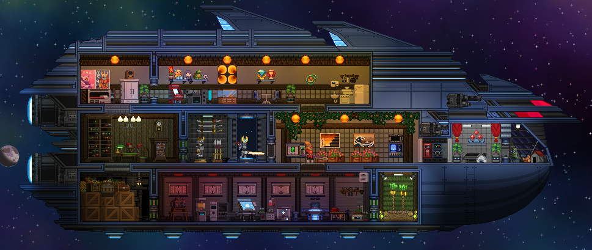
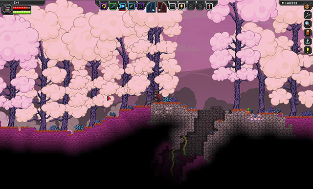
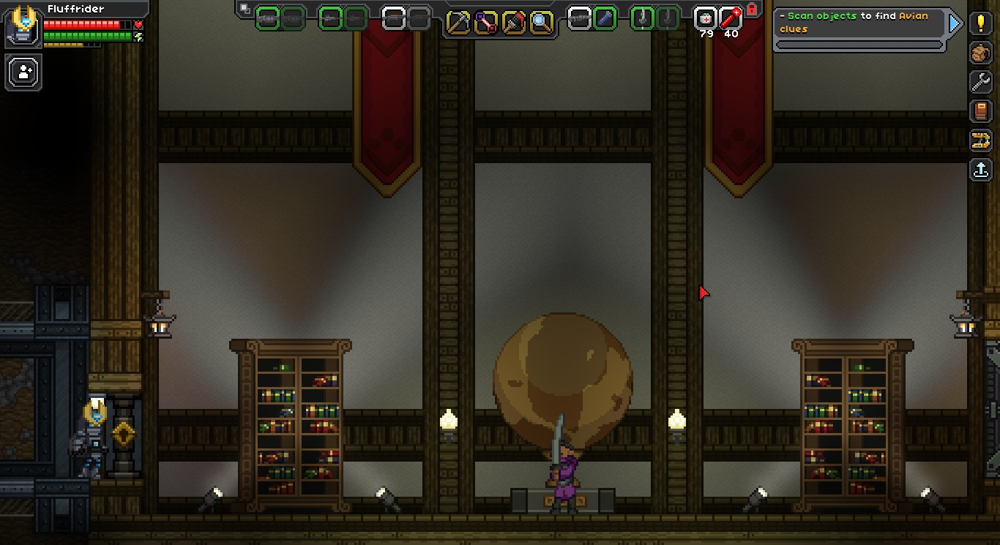
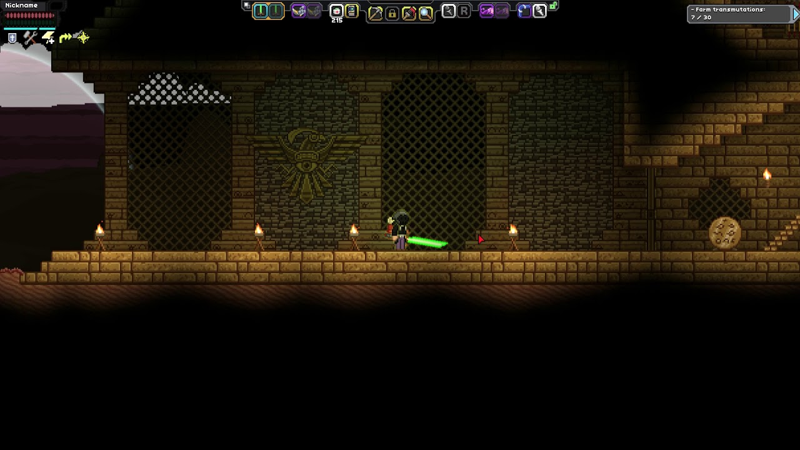
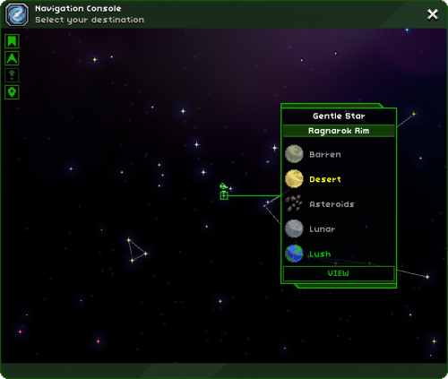

Starbound was advertised as a succesor and improvement upon Terraria, one of the best selling games of all time. However, given that you've likely never heard of it, this dream did not go through. Funded and released, but the fame expected and glamour was not granted. Starbound lacked part of what made Terraria so iconic and memorable. But what it does have Terraria cannot even light a candle to.
The biggest difference between the two is Starbound is a high space sci-fi adventure. Dealing with a galaxy thousands of years ahead of our own, where humanity isn't alone in the universe. They collaborate and fight with the Simian like Apex, the aquatic Hylotls, the brutish Florian, the ancient Avian, the regressive Glitch, and the mysterious Novakids. All having thier own cultures, homeworlds, legends, settlements. And this is reflected in the players ship, which varies based on what race they chose at the beggining. While this is a superficial difference ultimatley, it is apart of Starbounds's greatest strengths, flavour.

The monsters you as the player face vary heavily! From the silly penguin general, to the malignant stain on the world that is the final boss and antagonist. This variation is remiscent of Terraria. But. Unlike it, this mish mash, while interesting, does not serve it well.
So much of Starbound's exploration is based around uniquely generated planets. Differing terrain, new monsters potential settlements to discover and claim, and so much more. Compared to Terraria's own generation, it seems so much more open ended and fantastical, and yet... Yet Starbound feels more samey. The generation is not as advanced as the game lets on, but in exchange, no matter how repeated the monsters may be, the music, the sounds of the world, all come together to make it feel alien. The true variation in Starbound's planets are the need for eqipment and resources avilable as well as the odd super dungeon on occasion. Most of the story takes place not on these randomized worlds, but sanatized instances you get to via the inship teleporter.

And what the game lacks in overall generation, its story dungeons are to die for. Scenic, beautiful, and so grand in scope it can make you feel so helplessly small. The Hylotl library is the greatest example to me. Building on what the player has no doubt enountered on the oceanic worlds of the galaxy, to make this sprawling domain of ruined learning and desolate deep Sea terror.
To counterpart the modern and advanced grandeur of the Grand Pagoda library is the Avian Temple featured in the next story chapter. This sprawling catacomb full of traps, puzzles, evident and proof in and of itself to the strange faith of the Avian as well as to thier strange god. To fully define the experience of traversing its innards is something one must do themself. and to see what thier god truly is with context of the post game dungeons is a realization I do not wish to deprive you of.
Each one of these stars is its own solar system the player can travel to with enough fuel. Countless worlds, uncountable treasures to find, and it may seem intimidating at first. But thats what introduces Starbounds odd flaw. There is so much, yet so little. Terrarias content is dense and numerous, to the point its overwhelming. But Starbound despite having the stars at your very finger tips lacks that. Ultimatley, there is not alot to do. The story is your only route, no less the collection and upgrading of weapons in the post game. All of this artistry, this beauty, and yet there is nothing to put it towards. It's sad. So sad. Since its release, only so much was added, the last of which being a humble update about and featuring bounty hunting. But a small dosage of content can only do so much for it. This wasted beauty that I love so dear.